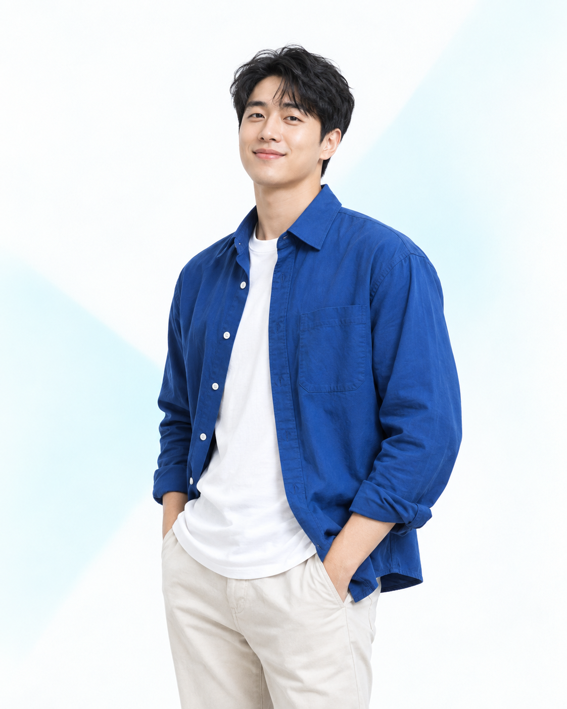

Product Design
사용자와 비즈니스 목표를 연결해 명확하고 쓰기 쉬운 제품 경험을 설계합니다.
- Product Strategy
- User Flow
- UI Design
PRODUCT DESIGNER · SEOUL
복잡한 문제를 선명한 화면과 자연스러운 흐름으로 바꿉니다. 제품의 목표와 사용자의 마음이 만나는 지점을 설계합니다.

안녕하세요, 저는 김민준입니다.
리서치에서 발견한 작은 단서를 제품 전략과 인터페이스로 연결합니다. 스타트업과 테크 팀에서 아이디어를 실제로 쓰이는 서비스로 만드는 일을 해왔습니다.
문제를 함께 정의하고, 빠르게 검증하며, 팀이 오래 사용할 수 있는 시스템까지 남기는 것을 중요하게 생각합니다.
더 이야기하기 →제품의 방향을 찾는 순간부터 실제 화면이 완성되는 순간까지, 필요한 깊이로 함께합니다.
사용자와 비즈니스 목표를 연결해 명확하고 쓰기 쉬운 제품 경험을 설계합니다.
사용자의 실제 맥락을 관찰하고, 팀이 움직일 수 있는 인사이트로 정리합니다.
브랜드의 일관성과 팀의 속도를 함께 높이는 유연한 디자인 시스템을 만듭니다.
복잡함을 덜어내고 핵심 경험을 또렷하게 만든 최근 작업입니다.
문제의 맥락과 사용자의 진짜 필요를 찾습니다.
팀이 함께 바라볼 목표와 성공 기준을 정리합니다.
빠르게 만들고 검증하며 가장 자연스러운 흐름을 찾습니다.
세심한 완성도와 명확한 문서로 제품에 안착시킵니다.
프로젝트 이야기를 들려주세요